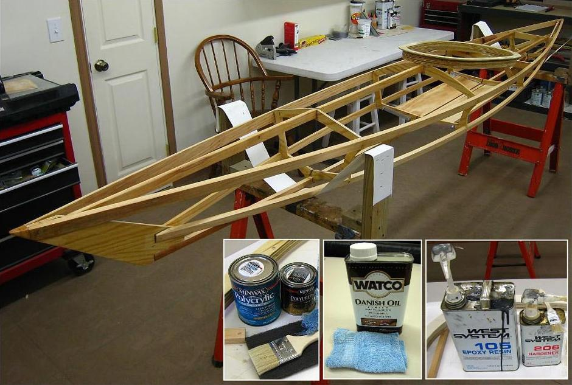

| Finishing | Menu Previous Page Next Page |
|

Wood Sanding - The frame is sanded with 120 / 220 sandpaper, with and without a sanding block. All edges are sanded to round them a bit. How much you sand is up to you. I probably spent less than an hour sanding the entire boat.
Epoxy Sanding - Epoxy is sanded between coats or in preparation for a urethane final coat to remove a film called "amine blush". Use a lightweight sanding pad that was been moistened with water. After sanding this way, wipe down the plywood surface with a damp cloth and allow to dry completely before applying a second epoxy or Urethane coat. Coating Cross Sections, Coaming, Stems - All plywood edges are double coated with epoxy resin. All other plywood surfaces are single coated. All plywood is final coated with urethane. Both epoxy and urethane are applied with a brush. Coating Stringers ( redwood) and Floor (pine) - All softwood is double coated with Watco "Natural" Oil. Watco is applied quickly with a soft cloth. A second coat can be applied within 30 minutes. If the second coat "stands" on the surface after about 15 minutes, wipe it off with a soft cloth. Watco is very easy to apply and is also an excellent coating for a GP. |
|